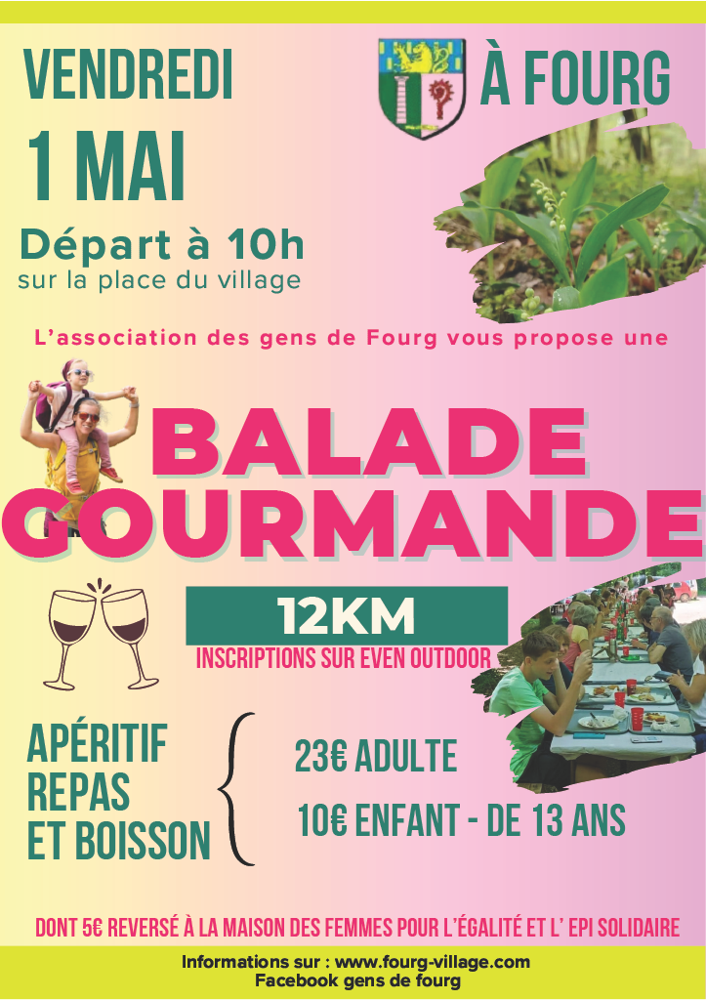
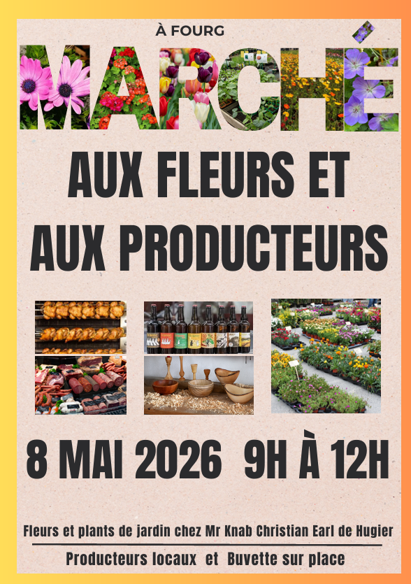
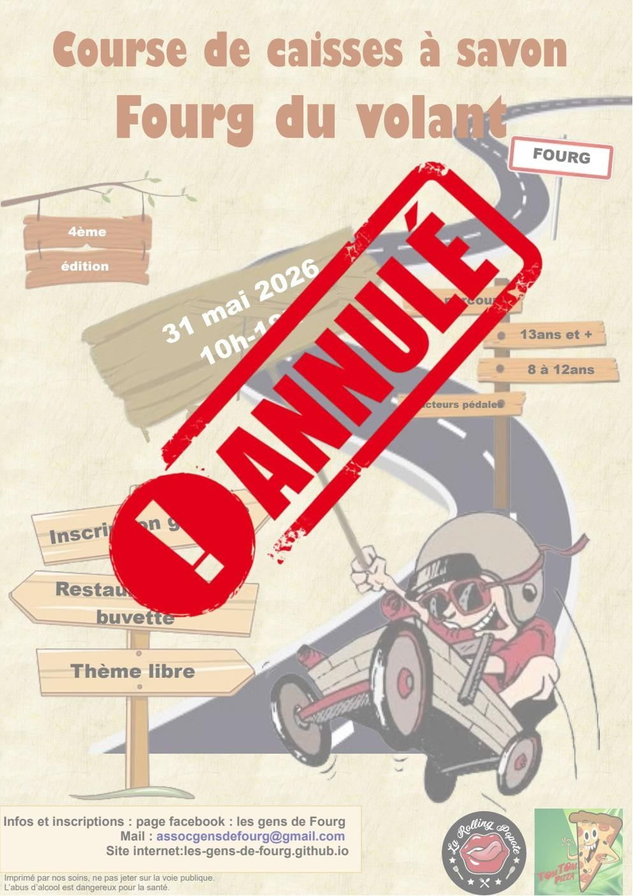

Adresse
1 Place de la mairie
25440 Fourg
Contact
Email : assocgensdefourg@gmail.com
Tél : 06.73.58.59.74



1 Place de la mairie
25440 Fourg
Email : assocgensdefourg@gmail.com
Tél : 06.73.58.59.74